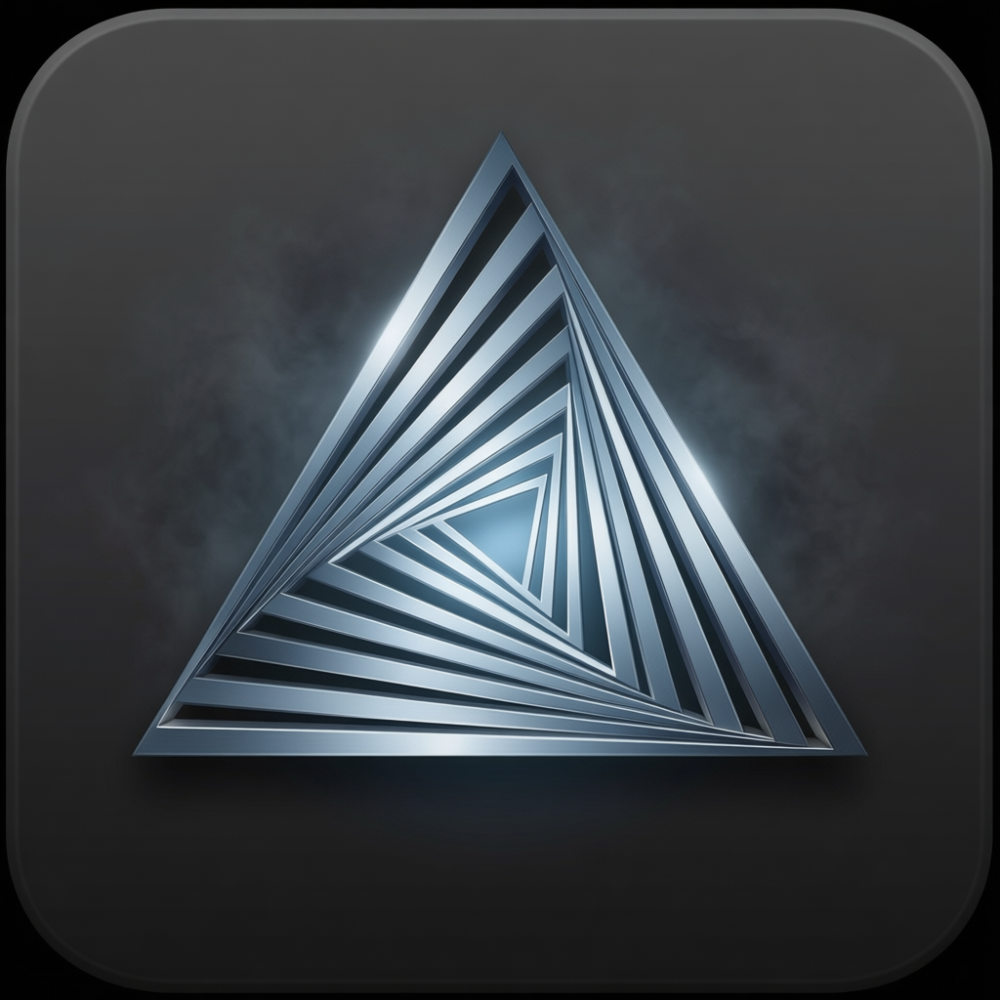

01
A-Coder IDE
AI-native editor
A full editor on VS Code's foundation, transformed into an autonomous partner that reasons about your entire codebase.
- ▸Chat · Plan · Agent · Learn modes
- ▸Semantic search & fast apply
- ▸One-click migration from Cursor
One engine · Three surfaces
One self-extensible agent engine, three surfaces — an AI-native IDE, a terminal agent, and a native desktop app. Bring your own model; or run fully local.
0
Surfaces
0+
Providers
0+
Models
0
Middlemen
The system
IDE
editor
CLI
terminal

Desktop
native
↕
Engine
↕
Agent runtime
tools · loops · state
MCP-native
any server, any tool
Session graph
branch · resume · fork
Sessions, tools, providers, and skills are identical everywhere. Start a task in the terminal, finish it in the IDE, review it on the Desktop.
01
AI-native editor
A full editor on VS Code's foundation, transformed into an autonomous partner that reasons about your entire codebase.
02
Terminal agent
The self-extensible terminal agent. Reads your codebase, edits files, runs commands — and extends itself with MCP and skills.
03
Native app
The same engine in a fast Tauri shell — project workspaces, a session tree, a model picker, and voice mode.
a-coder-cli --desktop02 / IDE
Built on VS Code's battle-tested foundation. A-Coder IDE understands your whole project, researches solutions, and implements features while you stay in flow.
See the IDE repoMODE 01
Balanced assistance for questions, quick fixes, and pairing.
MODE 02
Deep research for understanding codebases and architecture.
MODE 03
Full autonomy for multi-step features and complex refactors.
MODE 04
A coding tutor — exercises, streaks, badges, adaptive hints at three levels.
Fast codebase search, paginated reads, symbol outlines.
Exact-match edits, Morph fast apply, smart diffs.
TOON compression cuts tokens 30–70%.
Imports settings, keybindings, and extensions from VS Code, Cursor, or Windsurf in one click.
Inline FIM completion, Ctrl+K inline edits, vision, threads.
03 / CLI
Self-extensible by design. It discovers your MCP servers, skills, and extensions at launch — and you can teach it new behavior mid-session. Background agents keep long jobs running while you keep working.
Backdrop — “the arch” · rendered with our own image pipeline
04 / Desktop
A fast Tauri shell — no browser, no daemon. Open it from the terminal with a-coder-cli --desktop and it picks up exactly where the CLI left off.
Multiple projects side by side, each with its own sessions.
Branch conversations, review diffs, resume anywhere.
Speech-to-text and text-to-speech for hands-free coding.
Live catalog refresh across every connected provider.
Your data, your rules
Messages go straight from your machine to the provider — no middleman, nothing stored, nothing trained on. Local models supported end to end.
Project Infra · The A-Tech Corporation
A-Coder is built and maintained in Australia, as part of Project Infra's sovereign AI movement. Your code, your models, your data — no foreign middleman in the loop.
🇦🇺
Every line of A-Coder is written and shipped by The A-Tech Corporation from Australia — sovereign software by default, for Australian and New Zealand builders first.
Project Infra
The movement to run AI on infrastructure you own — open-source tools like llama.cpp and vLLM, on-premise, with data that never leaves your building. A-Coder is its software arm.
SCX.ai × Amaara Cloud
We're proud to partner with SCX.ai to bring Australian-hosted frontier open-weight models to A-Coder — including Project MAGPiE, Australia's sovereign frontier model — courtesy of Amaara Cloud, our models-as-a-service platform. One sign-up — the Amaara Coding plan — and your key works across the entire A-Coder ecosystem, and any other app you like.
Plans & services
When the agent needs more power — or a human touch — the system has you covered.
A-Coder Pro · $49/month
Access to the best coding models, curated skills, MCP servers, and AI code reviews — powered by our partnership with Senix, behavioral PR review with risk tags the moment you open a pull request. Also available standalone through Senix directly.
Explore Senix reviewsA-Coder Tandem · with Innowise
AI gets projects 80–90% complete. When your agent hits a wall it simply can't climb, Tandem escalates to real engineers — in partnership with Innowise, a full-cycle software development company with 3,500+ IT professionals — who take you to 100%. Usually under $999. One-time fee, no subscription.
Escalate a projectInstall
macOS / Linux / Windows
curl -sSf https://raw.githubusercontent.com/hamishfromatech/a-coder-cli/feat/desktop-unified-release/install-a-coder.sh | bashpowershell -ExecutionPolicy Bypass -c "irm https://raw.githubusercontent.com/hamishfromatech/a-coder-cli/feat/desktop-unified-release/Install-A-Coder.ps1 | iex"Then run a-coder-cli in any project. Read the docs →
macOS / Win / Linux
Native installers from GitHub Releases — or, with the CLI installed, just run a-coder-cli --desktop.
macOS / Linux / Windows
curl -fsSL https://raw.githubusercontent.com/hamishfromatech/A-Coder/main/install.sh | bashirm https://raw.githubusercontent.com/hamishfromatech/A-Coder/main/install.ps1 | iexOr grab .dmg / .exe / .deb from the latest release. Checksum-verified.
Free forever for individuals, solo founders & businesses under $10M USD revenue. Enterprises license A-Coder for company-wide use — see pricing.
One engine, three surfaces, your models. Free and open source.